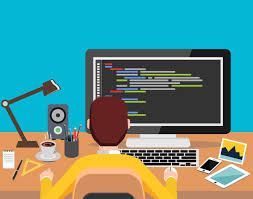

LibrosGratis.dev: La biblioteca digital gratuita que reúne más de 112 recursos de programación en español
Tanto si estás dando tus primeros pasos en la programación como si buscas profundizar en un lenguaje o tecnología específica, LibrosGratis.dev ofrece material de calidad, curado por la comunidad, sin costo alguno y completamente en español.
¿Qué ofrece?
El catálogo está organizado por categorías temáticas que cubren prácticamente todo el espectro del desarrollo de software:
Formatos accesibles
Cada recurso puede consultarse directamente en el navegador en formato HTML o PDF, o bien descargarse para lectura offline. Además, muchos títulos enlazan a sitios web externos con contenido interactivo.
Un proyecto comunitario y de código abierto
LibrosGratis.dev nace del repositorio de GitHub midudev/libros-programacion-gratis, impulsado por la comunidad hispanohablante de desarrollo. Cualquier persona puede proponer nuevos libros a través de un issue en GitHub, lo que mantiene el catálogo en constante crecimiento y actualización.
¿Para quién es?
Tanto si estás dando tus primeros pasos en la programación como si buscas profundizar en un lenguaje o tecnología específica, LibrosGratis.dev ofrece material de calidad, curado por la comunidad, sin costo alguno y completamente en español. Una herramienta indispensable para estudiantes, autodidactas y profesionales que prefieren aprender en su idioma nativo.
